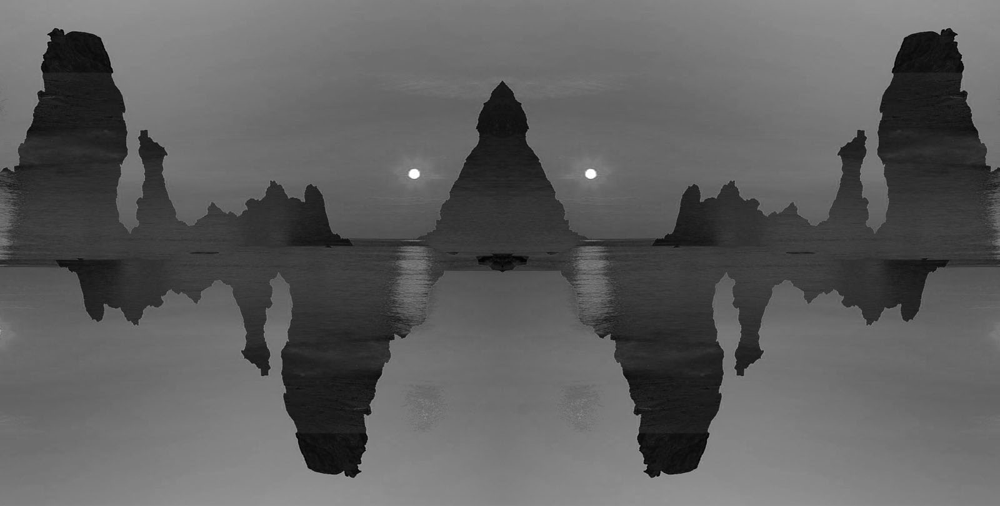
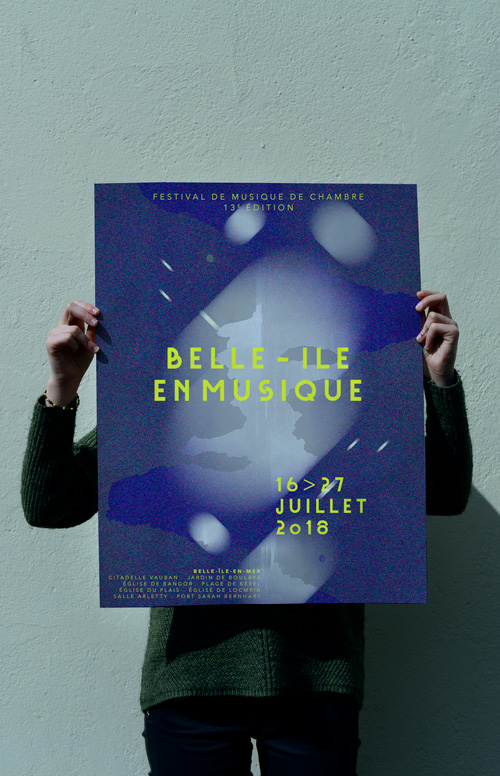

Project: To overhaul of a visual identity through the renewal of a logo and a poster, that for a classical music festival named « belle il en musique « taking place in belle ile en mer (Brittany, fr) during the second part of July.
Description: The coastline ’s outline in a symmetrical duplication creates a new dimension to the picture. This is how the new graphic design enhances the power of music in this insular environment.
Purpose: To tackle the classical music and the idea of the island through the confrontation of different typologies of movements. Convergence between the curves of the landscape and the musical waves. Expression of the insular character giving an exclusivity between the public and the performances.
